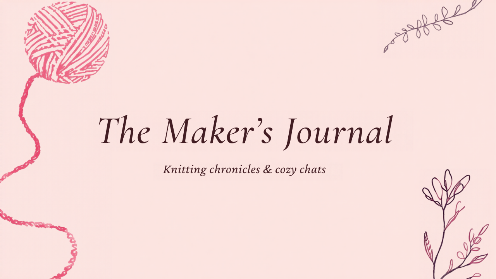

வணக்கம்Ōtautahi Christchurch, Aotearoa
Planet Pearl
Dear friends, come in and get cosy. Knitting, quilting, slow living and a good cup of tea.
The journal
Unravelled
slowly.
Knitting chronicles, stitches and stories, crochet escapades, embroidery and patchwork magic, threads of creativity, crafty conversations and cozy chats.
This is my making journal. I share what I'm working on, what I've made, and all the pretty yarn, fabric and notions I've found along the way, from my little Christchurch home and from creative corners all over New Zealand.
Watch
The
reel.
Every film from the channel, newest first. Press play right here, no tab-hopping.
From the channel
The whole archive
Or browse by mood
- 01Maker's journalKnitting chronicles, crochet escapades, embroidery and patchwork magic.Watch ↗
- 02A maker's journeyDiscovering New Zealand's creative corners: yarn stores, retreats and fibre arts down under.Watch ↗
- 03Slow living & homemakingGarden, gather and craft. Savouring the simple, one cosy day at a time.Watch ↗
- 04Journaling my makesPens, paper and stickers: how I plan and track my projects.Watch ↗
- 05Peppercorn trailsCooking from scratch, with love, from my kitchen.Watch ↗
- 06Travel diariesRoad trips, scenery and serendipity around the South Island.Watch ↗

Series coverThe Maker’s Journal ↗slow down,
make something beautiful
மெதுவாக வாழ்வோம்
Patterns
Designed
by hand.
Original patterns, sketched in my journal and tested at my own kitchen table.
Got a stitch, a shape or a yarn you can't stop thinking about? Tell me what you'd love to make and I'll happily draw it up. Pattern design and tech-editing collaborations welcome too.
Shop & kits
Yarn, kits
& treasures.
Planet Pearl
shop
Things I've made and things I love, gathered in one cosy corner.
Visit the shop ↗ No. 2Craft Club
kits
Up to 70% off through my link, plus an extra 10% with the code PEARLINJACOB10 at checkout.
Shop Craft Club ↗ Affiliate link: I may earn a small commission at no extra cost to you.Contact
Let's make
something.
Collaborations, yarn questions, pattern ideas, or just a friendly hello. I read everything with a cup of tea.